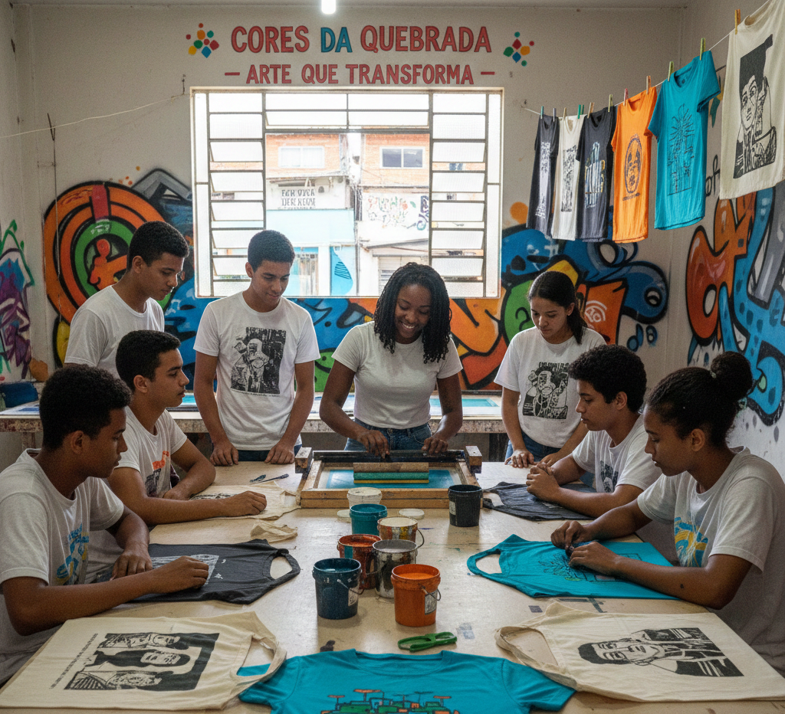
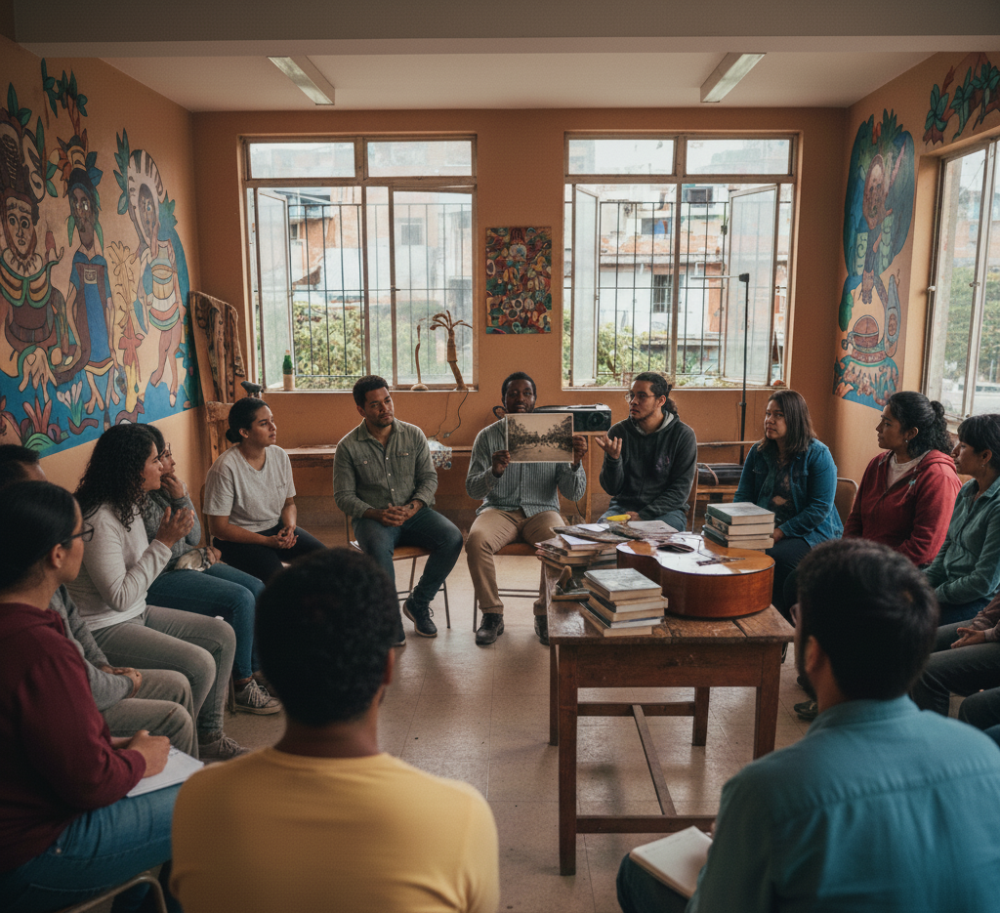

🌍 Sobre o Projeto: Cultura e Desenvolvimento Social
Nosso projeto de intervenção visa promover a **transformação social** e o **desenvolvimento comunitário** através do diálogo cultural e da capacitação prática.
Acreditamos que a cultura é a ferramenta mais poderosa para fortalecer a **identidade**, gerar **autonomia** e criar novas oportunidades de renda e expressão na comunidade.
"A arte é a mais alta forma de esperança."
🤝 Contexto Comunitário: Heliópolis
Nosso trabalho se insere na rica e vibrante rede cultural de Heliópolis. Valorizamos o trabalho das instituições locais e buscamos complementar essa oferta de capacitação.
Oficinas Culturais e de Capacitação Existentes na Região:
- **Música:** **Instituto Baccarelli** (Orquestras, Coral e Musicalização).
- **Audiovisual:** **Cine Favela** (Oficinas de cinema, debates e inclusão digital para idosos).
- **Artes Cênicas:** **CEU Heliópolis** (Teatro, Dança, Artes Visuais e atividades esportivas).
- **Profissional:** **ETEC e UNAS/Telecentro** (Cursos técnicos, informática básica e Inclusão Digital).
O Nosso Diferencial:
Nossas oficinas de **Serigrafia** e **Rodas de Conversa** oferecem capacitação prática focada na **Geração de Renda Rápida** e um espaço para **Diálogo Crítico** sobre Desigualdades e Autonomia, complementando a formação local.
🎨 Nossas Oficinas de Capacitação
Oficina de Serigrafia: Cores da Quebrada
Capacitação técnica para criação e produção de estampas em tecido, focando em temas da cultura e história local. Ideal para quem busca uma fonte de **renda extra** e expressão artística.
- Facilitador(a): Cristina Silva
- Duração: 4 Encontros (16 horas totais)
- Foco: Inclusão Produtiva e Empreendedorismo
Rodas de Conversa: Memória e Identidade
Encontros temáticos e dialógicos, mediados por um educador social, para debater desafios e oportunidades da comunidade, usando música e literatura como gatilhos.
- Facilitador(a): Roberto Souza
- Duração: Mensal (2 horas por encontro)
- Foco: Reflexão Crítica e Fortalecimento Comunitário
📝 Inscrições e Contato
Interessado em participar ou apoiar? Preencha o formulário abaixo para garantir sua vaga ou entre em contato com a coordenação.
Fale Conosco
📧 E-mail: contato@projetocultural.org
📱 WhatsApp: +55 11 94454-7596